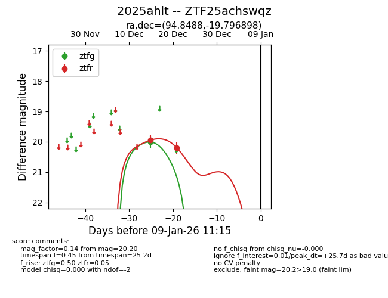
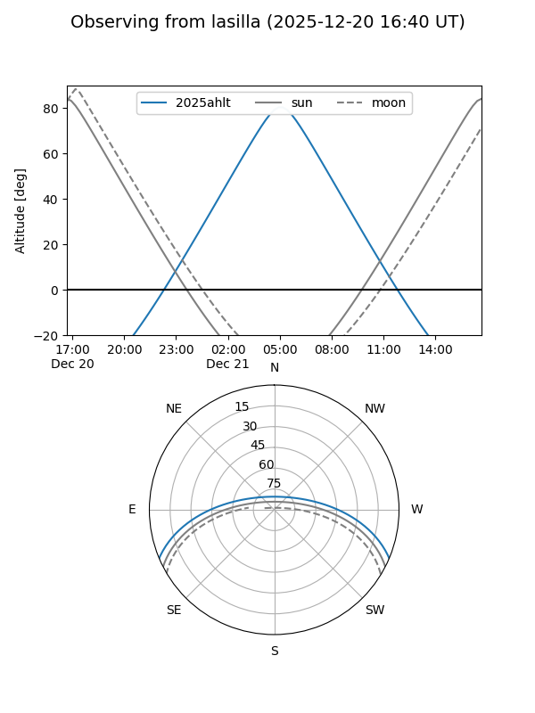
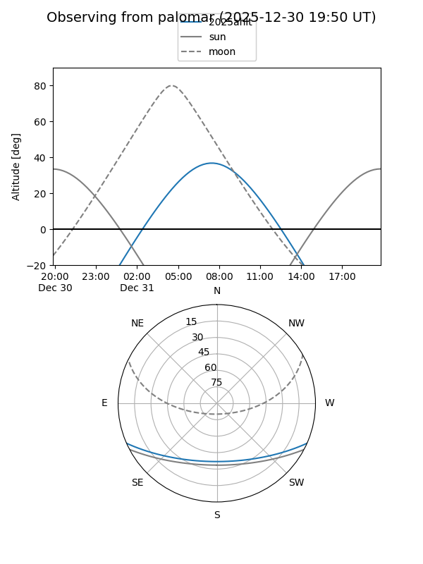
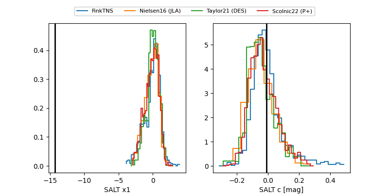

2025ahlt
Target 2025ahlt at 2025-12-31 18:00
Aliases and brokers:
FINK: link
Lasair: link
ALeRCE: link
TNS: link
YSE: link
alt names
ZTF25achswqz (ztf,fink_ztf)
2025ahlt (tns,yse)
Coordinates:
equatorial (ra, dec) = 94.8488,-19.79690
equatorial (HMS+DMS) = 06:19:23.70,-19:47:48.83
galactic (l, b) = (227.4711,-15.73169)
Flags:
Photometry:
last ztfg=20.01, ztfr=20.20
1 ztfg, 2 ztfr detections
Lightcurve

Visibility


Additional plots
